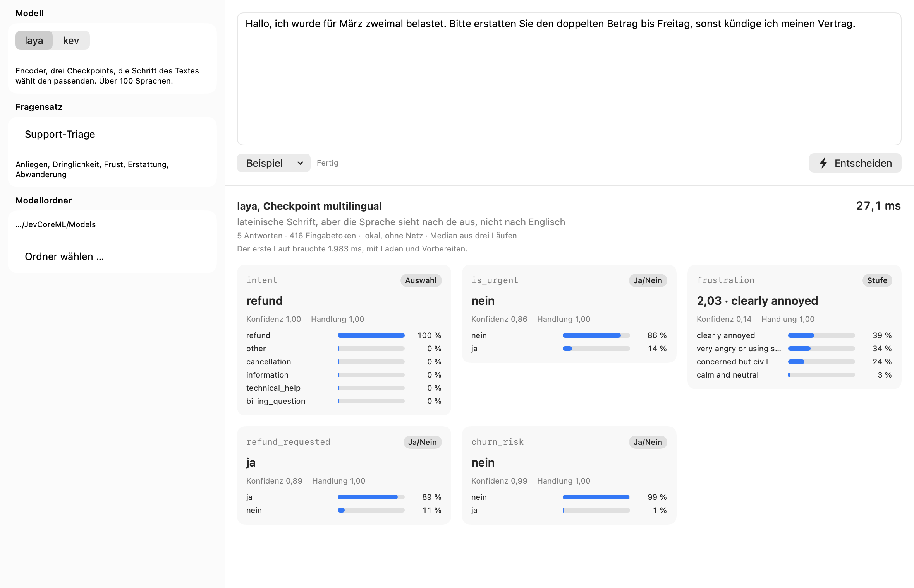

Entscheidungen in Millisekunden, direkt auf dem Mac.
Zwei Entscheidungsmodelle, JevCoreML und laya, als fertige Core-ML-Pakete. Ein Text geht hinein, eine kalibrierte Entscheidung kommt heraus: Auswahl, Stufe oder Ja/Nein, mit Wahrscheinlichkeiten. Gerechnet auf der eigenen GPU, ohne Python, ohne Server, ohne Netz.

Drei Fragetypen, ein Aufruf
Jede Antwort ist eine Verteilung, keine Textgenerierung. Die Konfidenz ist kalibriert, also taugt sie als Schwelle: sicher genug, um zu handeln, oder an einen Menschen weitergeben. Die Balken unten sind echte Antworten von laya auf das Ticket aus dem Bild, in einem Aufruf, 27 ms.
An welches Team geht das Ticket?
Bis 256 Optionen bei JevCoreML, bei laya so viele, wie in die Sequenz passen.
Wie verärgert klingt der Kunde?
Geordnete Stufen, die Antwort ist der Erwartungswert, hier 1,74 von 0 bis 3.
Will der Kunde Geld zurück?
Eine Wahrscheinlichkeit für ja, bei laya dazu, ob eine Handlung angebracht ist.
Mehrere Fragen, ein Durchlauf, ein Paket
Ein Decoder mit Pointer-Kopf (Gewichte: kev-0.6b auf Qwen3-0.6B-Base), der bis zu acht
Fragen zum selben Text in einem Durchlauf beantwortet, mit bis zu 256 Optionen je Frage und
Zuständen bis 3072 Token. Ein Paket für alle Fälle, die Laufzeit wählt die Länge selbst.
Der HTTP-Server spricht das Format der TypeSafe-API; bestehende Clients zeigen einfach
auf localhost.
Über 100 Sprachen, mit Router
Ein Encoder in drei Checkpoints: englisch, mehrsprachig und einer für vier feste Abläufe. Der Router liest Schrift und Sprache des Textes und wählt den passenden, genau wie das Original. Eine Frage je Durchlauf, dafür klein (0,6 bis 0,8 GB je Checkpoint) und mit fertigen Fragensätzen für Support, E-Mail, Guardrails, Moderation und Modellwahl.
Welches nehmen?
JevCoreML zuerst. Es ist ein Paket statt drei, beantwortet mehrere Fragen in einem Durchlauf, nimmt lange Zustände und viele Optionen, und sein Server versteht bestehende Jev-Clients. laya lohnt sich, wenn die Texte in vielen Sprachen kommen (der mehrsprachige Checkpoint ist über 100 Sprachen gemessen, JevCoreML ist auf englischen Daten trainiert und auf Deutsch nicht vermessen), wenn eine App klein bleiben muss (JevCoreML belegt geladen bis zu 18 GB im Temp-Verzeichnis, laya unter einem), oder wenn es um eine einzelne Klassifikationsfrage mit hoher Trefferquote geht (AG News 92,9 %). Beide liefern dieselbe Antwortform, ein Wechsel kostet eine Zeile.
Gleich wie das Original, nur schneller
Gemessen auf einem M5 Max, dieselben Anfragen auf beiden Seiten, Median. laya im Original läuft als PyTorch auf der CPU, so wie es sich selbst misst.
| Fall | Original | JevCoreML | Faktor |
|---|---|---|---|
| laya, 1 Frage, englisch | 112,9 ms | 9,0 ms | 12,5× |
| laya, 4 Fragen, englisch | 314,8 ms | 33,6 ms | 9,4× |
| laya, 10 Fragen, englisch | 709,2 ms | 83,4 ms | 8,5× |
| laya, 1 Frage, deutsch | 37,4 ms | 6,0 ms | 6,2× |
| JevCoreML, ganze Suite über HTTP, 1468 Fragen | 59 ms | 19 ms | 3,1× |
Gegen den Cloud-Dienst Jev 1.13, der auf kev beruht: dieselbe Trefferquote auf Banking77 mit 77 Kategorien, 78,8 %, in 70 statt 320 ms und ohne Kosten je Aufruf.
| Prüfung gegen das Original | Ergebnis |
|---|---|
| laya, 15 Referenzanfragen je Checkpoint | 15/15 auf allen drei |
| laya, AG News, 1000 Zeilen | 1000/1000, Trefferquote 92,9 % auf beiden Seiten |
| laya, DAIR Emotion, 1000 Zeilen | 999/1000, die eine ein Gleichstand bei 0,4978 gegen 0,4977 |
laya über HTTP gegen Router.predict | 26/26 Entscheidungen, Antwort Feld für Feld gleich |
| JevCoreML gegen kev in PyTorch, ganze Entwicklungssuite, 1468 Fragen | 2 abweichende Antworten, 80,79 % gegen 80,93 % |
Einbinden
Ein Swift-Paket, eine Kommandozeile, ein HTTP-Server. Alles aus demselben Repo.
// Package.swift .package(url: "https://github.com/GodModeAI2025/JevCoreML", from: "1.0.0") import JevDecisionKit let laya = try LayaRouted.bundled() // Modelle als Ressourcen im App-Target let result = try await laya.answer( state: .object([("message", .string(ticketText))]), questions: [ ("team", .choice(instructions: "An welches Team geht das Ticket?", criteria: [ (name: "billing", description: "Rechnungen, Zahlungen"), (name: "tech", description: "Fehler, Ausfälle"), ])), ("dringend", .noul(instructions: "Ist das dringend?")), ]) for (id, answer) in result.answers { print(id, answer.answer, answer.confidence) }
git clone https://github.com/GodModeAI2025/JevCoreML.git && cd JevCoreML scripts/fetch-models.sh alle # laya und das kev-Paket, rund 3,3 GB; "kev" oder ohne Argument für einen Teil swift build -c release .build/release/jev --engine laya --models Models --demo --repeat 15 .build/release/jev --engine laya --models Models --request Examples/support-triage.json
.build/release/jev --engine laya --models Models --serve --port 8008 curl -s localhost:8008/v1/systemone -d '{ "state": "Der Kunde wurde zweimal belastet und will sein Geld zurück.", "questions": {"erstattung": {"type": "noul", "instructions": "Will der Kunde Geld zurück?"}} }' # Antwort in der Form von laya.Router.predict, samt routing und act_probability
In vier Schritten zur ersten Entscheidung
- Repo klonen. Voraussetzung ist ein Mac mit Apple Silicon, macOS 15 und Xcode 16. Das Swift-Paket baut auch für iOS 18 und läuft im iPhone-Simulator, dort ohne GPU: JevCoreML trifft dieselben Entscheidungen wie PyTorch, die Wahrscheinlichkeiten liegen bis 0,01 daneben, beim gepackten Mehrfragenlauf bis 0,034; laya weicht bis 0,04 ab. Auf einem echten iPhone ist nichts gemessen.
scripts/fetch-models.shlädt die Core-ML-Pakete aus dem Release und prüft die Prüfsummen.Demo/JevDemo.xcodeprojöffnen und starten, oderswift buildfür die Kommandozeile.- In der eigenen App das Paket einbinden und die Modelle als Ressourcen ins Target legen.
Die Modelle
Jedes Paket nimmt mehrere Eingabelängen an, und eine Anfrage läuft in der kürzesten, in
die sie passt. So rechnet auch laya im Original. Die Pakete liegen als ZIP im
Release models-v2,
jede Zeile unten hat ihren Download; scripts/fetch-models.sh holt und prüft
sie in einem Schritt.
| Paket | Wofür | Längen | Fragen | Optionen | Größe | Download |
|---|---|---|---|---|---|---|
| JevCoreML | ein Paket für alle Anwendungsfälle, Gewichte kev-0.6b | 128–3072 | 8 | 256 | 1,1 GiB | ZIP, 1,05 GB |
| Laya-EN-L512-K512-fp16 | englischer Text | 128–512 | 1 | 512 | 805 MiB | ZIP, 778 MB |
| Laya-ML-L1024-K1024-fp16 | alle anderen Sprachen | 128–1024 | 1 | 1024 | 615 MiB | ZIP, 594 MB |
| Laya-TD-L1024-K1024-fp16 | vier feste Abläufe, auf Wunsch | 128–1024 | 1 | 1024 | 805 MiB | ZIP, 778 MB |
| tokenizers.zip | die drei Tokenizer, gehören zu jedem Paket dazu | 8 MB | ZIP, 8 MB |
Prüfsummen: SHA256SUMS. Entpackt liegt jedes Paket als .mlpackage vor, das Xcode beim Bauen übersetzt.
JevCoreML: ein Paket für alles
JevCoreML ist ein Decoder mit Pointer-Kopf, die Gewichte sind kev-0.6b auf Qwen3-0.6B-Base, nach Core ML übertragen, fp16, 1,1 GB. Früher gab es davon drei Zuschnitte für drei Längen, und man musste wissen, welcher zur Anfrage passt. Jetzt trägt ein Paket alle sechs Längen als aufgezählte Eingabeformen, und die Laufzeit rechnet jede Anfrage in der kürzesten, in die sie passt. Eine kurze Frage kostet 7,5 ms, ein langer Zustand mit 3000 Token 270 ms, ohne dass jemand etwas einstellt.
Sechs Eingabelängen, 128 bis 3072 Token. Bis zu acht Fragen zum selben Text in einem Durchlauf, jede mit bis zu 256 Optionen. Fragen und Optionen wirken nur im Pointer-Kopf, deshalb kosten sie nichts: über kevs Entwicklungssuite liegt der Median bei 19 ms, mit den drei getrennten Zuschnitten waren es 22,7 ms, bei denselben 1468 Antworten. Je Länge gegen PyTorch geprüft, keine einzige gekippte Entscheidung; bei 512 Token sind die Logits auf der GPU bitgleich mit dem alten festen Export.
Die GPU bereitet jede Länge einmal vor, der Warmlauf dauert deshalb rund 13 Sekunden
nach 4 Sekunden Laden; warmUp() beim Start erledigt das im Hintergrund. Wer nur
kurze Anfragen sieht, gibt sequenceLengths: [128, 256, 512] an. Die Laufzeit
legt das Paket auf die GPU, auch wenn .all gewählt ist, weil der Planer von
Core ML es sonst auf die CPU legte. Herkunft und Lizenz der Gewichte stehen in
NOTICE und in
den Metadaten des Pakets.
Nach dem Entpacken: JevCoreML.mlpackage und tokenizer.json nebeneinander
ablegen, dann SystemOne(modelURL:tokenizerURL:). Oder im geklonten Repo
scripts/fetch-models.sh kev, das lädt, prüft und entpackt.
Wie geprüft wurde
Jede Stufe einzeln gegen das Original, weil ein Fehler auf jeder Stufe lautlos bleibt: plausible Antworten, nur manchmal andere.
- Tokenizer. 31 238 Fälle bei laya, 15 032 bei JevCoreML, byte-identisch, dazu jeder Unicode-Codepunkt einzeln.
- Encoder. Die Sequenz Token für Token gegen die des Originals, samt Kürzungsregeln.
- Modell. Logits gegen PyTorch auf Referenzanfragen und zwei öffentlichen Datensätzen.
- Router. 116 Entscheidungen über Schrift, Sprache und Vorrang, alle gleich.
- HTTP. Antworten Feld für Feld neben die von
Router.predictgelegt. - Befunde. Neural Engine, NaN in fp16, Unicode-Versionen, Positionswinkel in fp16: alles gefunden, gemessen, behoben.
Die ausführlichen Berichte: laya-Port · Benchmark-Bericht · Rohdaten